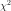

Statistics on sample¶
Building distributions from samples¶
DistributionFactory(*args) |
Base class for probability distribution factories. |
DistributionFactoryResult(*args) |
Results of distribution estimation. |
ArcsineFactory(*args) |
Arcsine factory. |
BernoulliFactory(*args) |
Bernoulli factory. |
BetaFactory(*args) |
Beta factory. |
BinomialFactory(*args) |
Binomial factory. |
BurrFactory(*args) |
Burr factory. |
ChiFactory(*args) |
Chi factory. |
ChiSquareFactory(*args) |
Chi-Square factory. |
DiracFactory(*args) |
Dirac factory. |
DirichletFactory(*args) |
Dirichlet factory. |
ExponentialFactory(*args) |
Exponential factory. |
FisherSnedecorFactory(*args) |
Fisher-Snedecor factory. |
FrechetFactory(*args) |
Frechet factory. |
GammaFactory(*args) |
Gamma factory. |
GeneralizedParetoFactory(*args) |
Generalized Pareto factory. |
GeometricFactory(*args) |
Geometric factory. |
GumbelFactory(*args) |
Gumbel factory. |
HistogramFactory(*args) |
Histogram factory. |
InverseNormalFactory(*args) |
Inverse Normal factory. |
KernelSmoothing(*args) |
Non parametric continuous distribution estimation by kernel smoothing. |
LaplaceFactory(*args) |
Laplace factory. |
LogisticFactory(*args) |
Logistic factory. |
LogNormalFactory(*args) |
Lognormal factory distribution. |
LogUniformFactory(*args) |
Log Uniform factory. |
MaximumLikelihoodFactory(*args) |
Maximum likelihood factory. |
MeixnerDistributionFactory(*args) |
Meixner Distribution factory. |
MethodOfMomentsFactory(*args) |
Estimation by method of moments. |
MultinomialFactory(*args) |
Multinomial factory. |
NegativeBinomialFactory(*args) |
Negative Binomial factory. |
NormalFactory(*args) |
Normal factory. |
PoissonFactory(*args) |
Poisson factory. |
RayleighFactory(*args) |
Rayleigh factory. |
RiceFactory(*args) |
Rice factory. |
SkellamFactory(*args) |
Skellam factory. |
StudentFactory(*args) |
Student factory. |
TrapezoidalFactory(*args) |
Trapezoidal factory. |
TriangularFactory(*args) |
Triangular factory. |
TruncatedNormalFactory(*args) |
Truncated Normal factory. |
UniformFactory(*args) |
Uniform factory. |
UserDefinedFactory(*args) |
UserDefined factory. |
WeibullFactory(*args) |
Weibull factory. |
Building copulas from samples¶
AliMikhailHaqCopulaFactory(*args) |
AliMikhailHaq copula factory. |
BernsteinCopulaFactory(*args) |
BernsteinCopula copula factory. |
ClaytonCopulaFactory(*args) |
Clayton Copula factory. |
FarlieGumbelMorgensternCopulaFactory(*args) |
Farlie Gumbel Morgenstern Copula factory. |
FrankCopulaFactory(*args) |
Frank Copula factory. |
GumbelCopulaFactory(*args) |
Gumbel Copula factory. |
NormalCopulaFactory(*args) |
Normal Copula factory. |
Correlation analysis¶
CorrelationAnalysis_PearsonCorrelation(…) |
Correlation evaluation based on the Pearson correlation coefficient. |
CorrelationAnalysis_SpearmanCorrelation(…) |
Correlation evaluation based on the Spearman correlation coefficient. |
CorrelationAnalysis_PCC(inputSample, …) |
Correlation evaluation based on the Partial Correlation Coefficient. |
CorrelationAnalysis_PRCC(inputSample, …) |
Correlation evaluation based on the Partial Rank Correlation Coefficient. |
CorrelationAnalysis_SRC(inputSample, …) |
Correlation evaluation based on the Standard Regression Coefficient. |
CorrelationAnalysis_SRRC(inputSample, …) |
Correlation evaluation based on the Standard Rank Regression Coefficient. |
Sensitivity Analysis¶
Refer to Sensivity analysis using Sobol indices.
ANCOVA(*args) |
ANalysis of COVAriance method (ANCOVA). |
FAST(*args) |
Fourier Amplitude Sensitivity Testing (FAST). |
SobolIndicesAlgorithm(*args) |
Sensitivity analysis. |
MartinezSensitivityAlgorithm(*args) |
Sensitivity analysis using Martinez method. |
SaltelliSensitivityAlgorithm(*args) |
Sensitivity analysis using Saltelli method. |
JansenSensitivityAlgorithm(*args) |
Sensitivity analysis using Jansen method. |
MauntzKucherenkoSensitivityAlgorithm(*args) |
Sensitivity analysis using MauntzKucherenko method. |
SobolIndicesExperiment(*args) |
Experiment to computeSobol’ indices. |
SobolSimulationAlgorithm(*args) |
Sobol indices computation using iterative sampling. |
SobolSimulationResult(*args) |
Sobol simulation result. |
Statistical tests¶
TestResult(*args) |
Test result data structure. |
Goodness-of-fit metrics & tests¶
FittingTest_BIC(*args) |
Compute the Bayesian information criterion. |
FittingTest_ChiSquared(*args) |
Perform a  goodness-of-fit test for 1-d discrete distributions. |
FittingTest_Kolmogorov(*args) |
Perform a Kolmogorov goodness-of-fit test for 1-d continuous distributions. |
FittingTest_TwoSamplesKolmogorov(sample1, …) |
Perform a Kolmogorov goodness-of-fit test on two samples. |
NormalityTest_AndersonDarlingNormal(sample) |
Evaluate whether a sample follows a normal distribution. |
NormalityTest_CramerVonMisesNormal(sample[, …]) |
Evaluate whether a sample follows a normal distribution. |
Graphical tests¶
VisualTest_DrawClouds(*args) |
Draw clouds from samples. |
VisualTest_DrawCobWeb(inputSample, …[, …]) |
Draw a Cobweb plot. |
VisualTest_DrawEmpiricalCDF(*args) |
Draw an empirical CDF. |
VisualTest_DrawHenryLine(*args) |
Draw an Henry plot. |
VisualTest_DrawHistogram(*args) |
Draw an histogram. |
VisualTest_DrawKendallPlot(*args) |
Draw kendall plot. |
VisualTest_DrawLinearModel(sample1, sample2, …) |
Draw a linear model plot. |
VisualTest_DrawLinearModelResidual(sample1, …) |
Draw a linear model residual plot. |
VisualTest_DrawQQplot(*args) |
Draw a QQ-plot. |
Hypothesis tests¶
HypothesisTest_Smirnov(firstSample, secondSample) |
Test whether two samples follows the same distribution. |
HypothesisTest_ChiSquared(firstSample, …) |
Test whether two discrete samples are independent. |
HypothesisTest_FullPearson(firstSample, …) |
Test whether two discrete samples are independent. |
HypothesisTest_FullRegression(firstSample, …) |
Test whether two discrete samples are not linear. |
HypothesisTest_FullSpearman(firstSample, …) |
Test whether two samples have no rank correlation. |
HypothesisTest_PartialPearson(firstSample, …) |
Test whether two discrete samples are independent. |
HypothesisTest_PartialRegression(…[, level]) |
Test whether two discrete samples are independent. |
HypothesisTest_PartialSpearman(firstSample, …) |
Test whether two sample have no rank correlation. |
HypothesisTest_Pearson(firstSample, secondSample) |
Test whether two discrete samples are independent. |
HypothesisTest_Spearman(firstSample, …[, …]) |
Test whether two samples have no rank correlation. |
Linear model tests¶
LinearModelTest_LinearModelFisher(*args) |
Test the nullity of the linear regression model coefficients. |
LinearModelTest_LinearModelResidualMean(*args) |
Test zero mean value of the residual of the linear regression model. |
LinearModelTest_LinearModelHarrisonMcCabe(*args) |
Test the homoskedasticity of the linear regression model residuals. |
LinearModelTest_LinearModelBreuschPagan(*args) |
Test the homoskedasticity of the linear regression model residuals. |
LinearModelTest_LinearModelDurbinWatson(*args) |
Test the autocorrelation of the linear regression model residuals. |
Model selection¶
FittingTest_BestModelBIC(*args) |
Select the best model according to the Bayesian information criterion. |
FittingTest_BestModelChiSquared(*args) |
Select the best model according to the goodness-of-fit test. |
FittingTest_BestModelKolmogorov(*args) |
Select the best model according to the Kolmogorov goodness-of-fit test. |
Linear models¶
LinearModel(*args) |
The linear model class is created through the method build of a LinearModelFactory. |
LinearModelFactory(*args) |
Class used to create a linear model from numerical samples. |